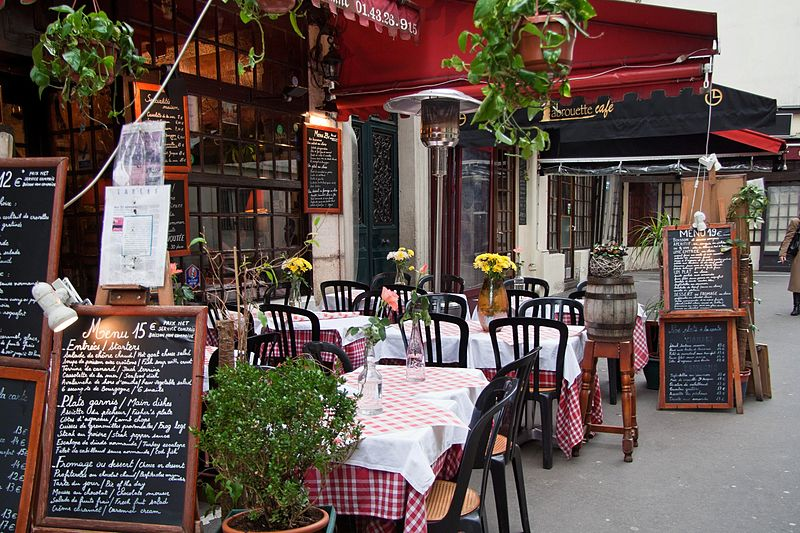

Bars
Whether working-class, trendy or chic, Parisian bars are the ideal spot to meet in the evening to have fun.
Closerie des Lilas is Diane's favorite bar. With a classic and friendly atmosphere it's a great place to spend time with your friends.

Paris is the capital and the most populous city of France with lots of unique and intersting places to visit
Whether working-class, trendy or chic, Parisian bars are the ideal spot to meet in the evening to have fun.
Closerie des Lilas is Diane's favorite bar. With a classic and friendly atmosphere it's a great place to spend time with your friends.
Paris has a great choice of restuarants. Each region has it's own speciality.
Rue Mouffetard is a traditional Parisian restaurant with a wonderful garden in the back.
There is an unlimited choice of cute little cafes in Paris.
A well know cafe which represents the culture of Paris is Cafe de Paris, located in Geneve, a region of Paris.
Paris is a great place to stay, offering many interesting things to cater to everyone's needs!
Back to homepage